![[밤하늘 별빛 아래 초원 위의 사자 왕]](images/0.jpeg)
드라마틱 에필로그
떠나지 않는 아버지
에스겔 37장 15-28절
"내가 머물 곳이 그들 위에 있을 것이다. 내가 그들에게 하나님이 되어 주겠다. 바로 그들이 나에게 백성이 될 것이다." (에스겔 37:27)
✨ 누적 조회수: ...회
🎵 사운드를 켜고 감상해주세요
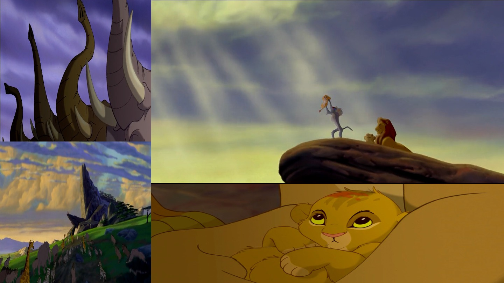
동이 트는 초원. 초원의 온 짐승, 온 세상이 이 아이 하나한테 절을 합니다. 태어나는 그 순간부터 "너는 왕의 아들이다, 다음 왕은 너다" 하고 정해 주는 인생.
근데 오늘 이야기는요. 이 왕자가, 혼자 도망치는 데서 시작합니다. 높이 들렸던 아이가, 바닥까지 떨어지거든요.
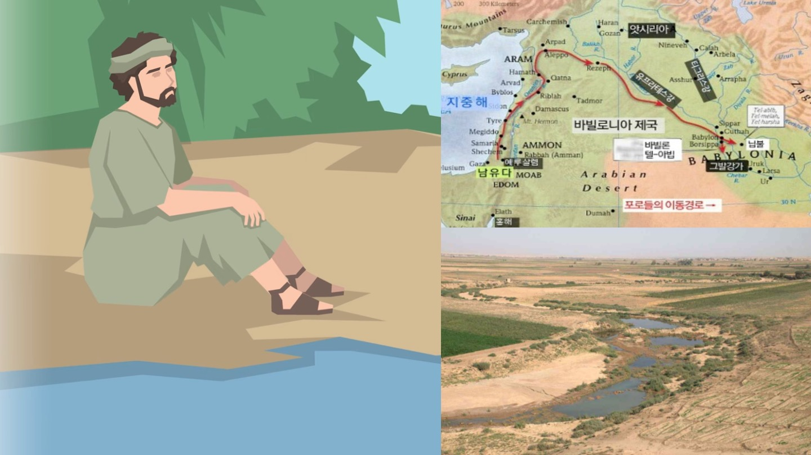
성경에도 강가에 혼자 앉아 있던 사람이 있었어요. 이름은 에스겔. 대대로 성전에서 하나님을 섬기던 엘리트 가문 청년. 동네 어른들이 다 "쟤는 크게 될 놈이다" 하던 사람.
그런데 하루아침에 나라가 망해요. 적군이 쳐들어와 줄줄이 포로로 끌려가고, 에스겔도 그 행렬에 섰어요. 평생 섬기던 성전은 불타 무너지고, 그 탄탄대로가 통째로 사라진 거예요.
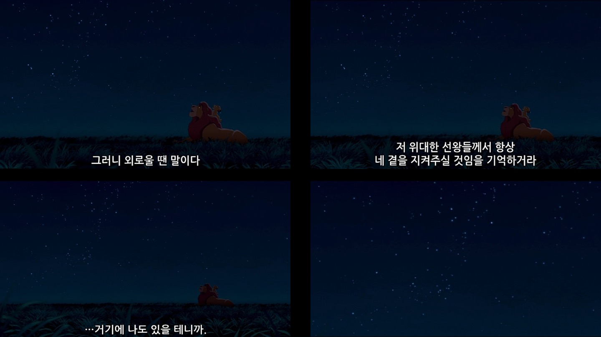
심바한테는 무파사라는 아버지가 있었어요. 덩치는 산만 하고 갈기는 황금빛으로 빛나는 왕. 그런 무서운 왕이 아들 앞에서는 그냥 아빠가 돼요. 같이 뒹굴고, 장난치고, 일부러 져 주고.
어느 밤, 둘이 나란히 누워 별 가득한 하늘을 봤어요. 무파사가 어린 아들한테 그래요.
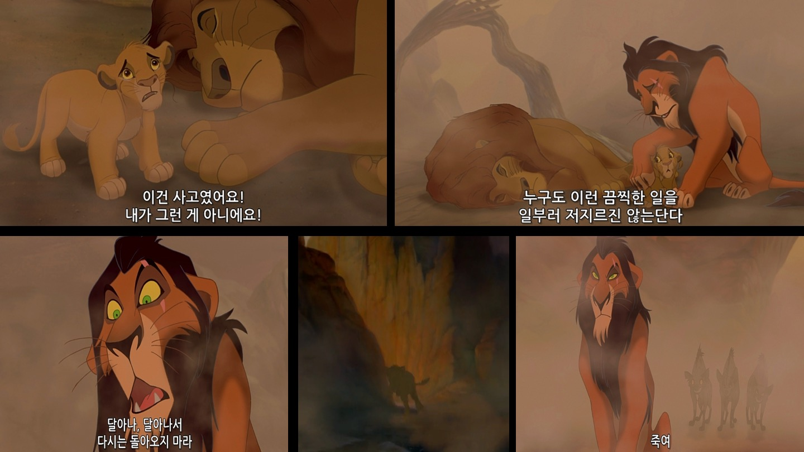
삼촌 스카가 함정을 팠어요. 어린 심바를 협곡에 몰아넣고 들소 떼를 몰아넣었어요. 아버지가 몸을 던져 아들을 구했지만, 결국 스카 손에 절벽 아래로 떨어졌어요.
그때 스카가 어린 조카 귀에 속삭였어요. "심바… 네가 아니었으면, 네 아빠는 안 죽었어. 도망쳐. 멀리 가. 다시는 돌아오지 마."
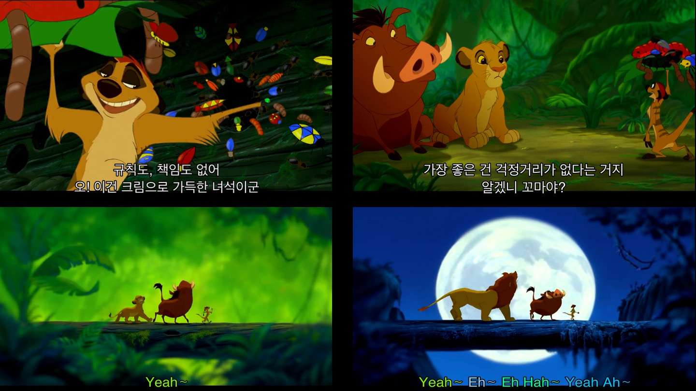
탈진해 쓰러진 심바를 두 친구가 정글로 데려가요. 티몬이랑 품바. 이 친구들 인생 철학은 딱 하나예요. 하쿠나 마타타. 책임질 일도 없고, 먹고 자고 놀면 돼요.
심바는 여기서 다 잊기로 해요. 아빠도, 고향도, 자기가 누구였는지도. 다 묻어버려요.
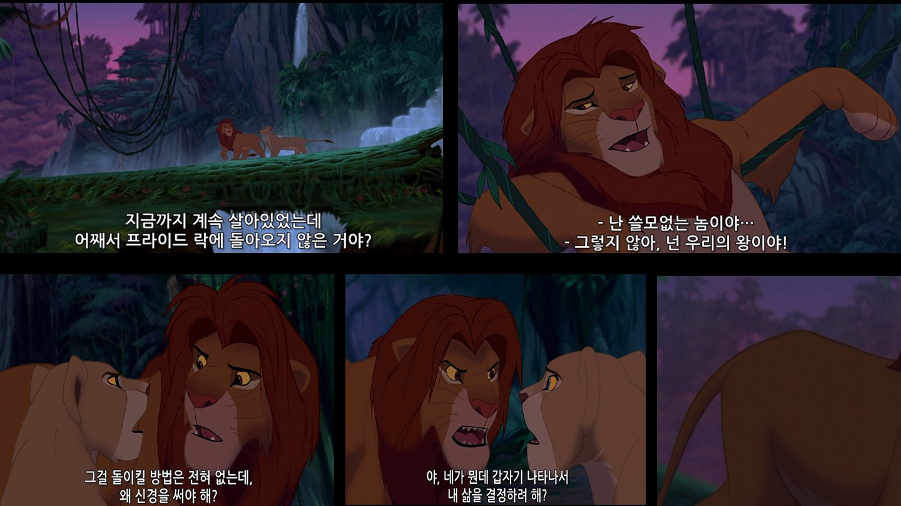
어느 날, 죽은 줄로만 알았던 고향 친구 날라가 나타나요. 다 큰 모습으로 심바 앞에. "오 심바야! 빨리 돌아가자. 고향이 엉망이야."
삼촌 스카가 왕이 된 고향은 폐허가 됐어요. 풀 한 포기 없이 말라붙고, 동물들은 굶주리고. 날라가 말해요. "네가 진짜 왕이야." 심바는 또 도망쳐요.
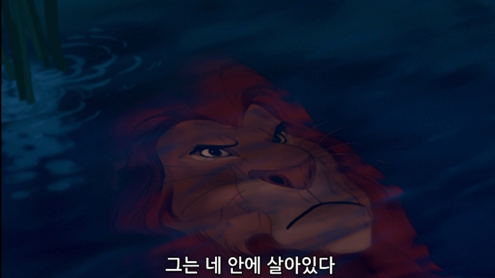
이상한 원숭이 라피키가 심바를 물가로 데려가요. "들여다봐." 처음엔 지치고 길 잃은 자기 얼굴이 비쳐요.
그런데 가만히 보고 있으니까, 그 얼굴 위로… 다른 얼굴이 떠올라요. 그렇게 잊으려고, 안 보려고 도망쳤던 그 아버지. 하늘에서, 죽은 줄로만 알았던 목소리가 울려요.
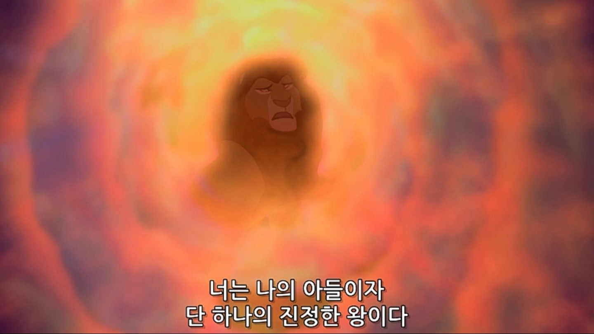
별을 보라고 했잖아요. 네가 혼자라고 느낄 때 언제나 너와 함께 있겠다고. 심바는 그 별을 안 보려고 고개를 돌렸는데, 별은 한 번도 안 꺼졌어요.
심바가 일어선 건, 갑자기 용기를 쥐어짜서가 아니에요. 아버지가 먼저 찾아왔어요. 먼저 얼굴을 보여줬어요. 먼저 불렀어요.
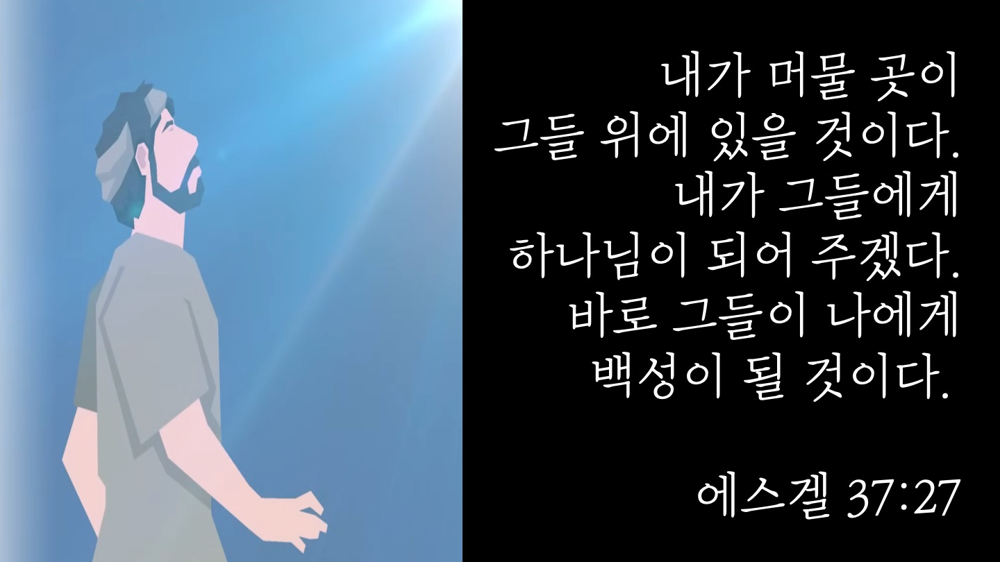
그 사람, 에스겔 기억나죠. 다 잃고 낯선 땅 포로 수용소 강가에 끌려와 "끝났다, 나 혼자다" 앉아 있던 청년. 그 사람한테 하나님이 뭐라고 하셨는지 아세요?
심바가 물속에서 아버지를 본 것, 그게 에스겔한테도 일어난 거예요. 나라 잃고 성전 무너져서 떠난 줄로만 알았던 하나님 아버지가, 한 번도 떠나지 않으셨던 거예요.
중랑천 다리 밑에서 "스무 살까지 살 수 있을까" 하던 저한테도, 하나님은 거기 계셨어요. 지금, 여러분이 앉아 있는 그 자리에도, 하나님이 이미 와 계세요.
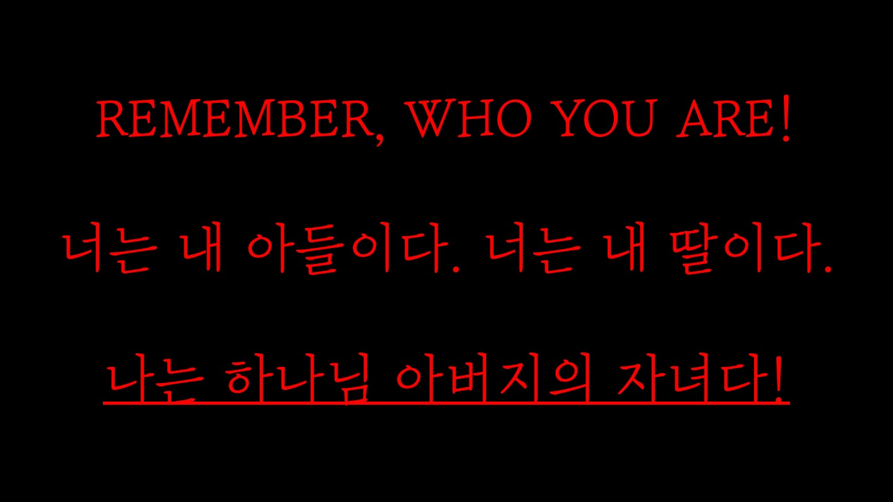
심바도, 에스겔도, 중랑천의 저도, 다 자기가 끝났다고 믿었어요. 들으세요. 그거, 틀렸어요. 이 모든 게 끝이 아니에요.
우리의 두려움의 자리마저도, 하나님이 먼저 와 계셨거든요. 그분은 여러분이 잘나서 오시는 분이 아니에요. 여러분이 도망쳐 숨어 있는 바로 그 자리로, 먼저 찾아오시는 분이에요.
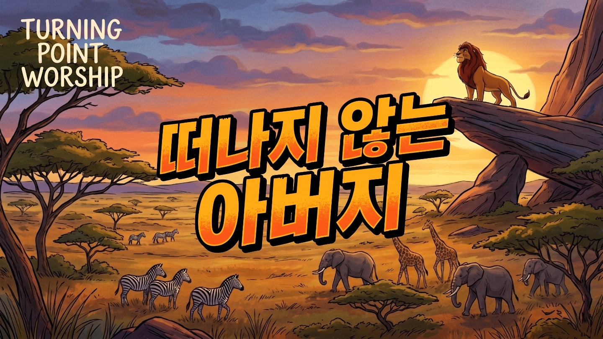
💬 이번 주 가족 식탁 질문
"지금 내가 '하쿠나 마타타'로 도망치고 있는 자리는 어딘가요? 아픈 마음 안 보고 싶어서 채우고 있는 것들은 무엇인가요? 하나님 아버지가 그 자리에 먼저 와 계신다는 걸 알면, 오늘 어떤 기도를 드리고 싶으신가요?"
🙏 부모님의 축복 기도문
"하나님 아버지, 우리 아이가 '나는 끝났다'는 거짓말에 속아 도망치지 않게 하옵소서. 우리 아이가 어디로 도망치든, 그 자리에 먼저 찾아오시는 아버지 하나님을 만나게 하옵소서. '너는 내 아들이다, 너는 내 딸이다' 부르시는 그 음성을 듣고 다시 일어서는 은혜로운 한 주가 되기를, 예수 그리스도의 이름으로 축복하며 기도합니다. 아멘."
REMEMBER WHO YOU ARE
여러분이 등을 돌렸어도,
그분은 여러분이 가장 비참하게 느껴졌던
그 자리에도 계셨어요.
여러분이 도망쳤어도,
주님은 안 떠나셨어요.
"너는 내 아들이다.
너는 내 딸이다."
그 부르심 앞에,
우리, 오늘을 걸어갑시다.
2026년 6월 28일 — 오늘이 터닝포인트입니다 🔁